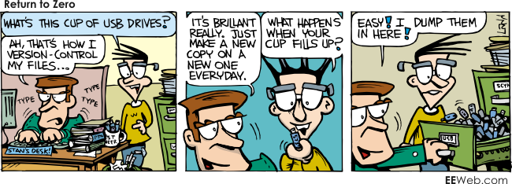

An Agile Life
With Github
I Am a...
- Sofware Engineer
- Open Source Advocate
- Web Developer
- Github Nut
- Polyglot
Where I developed my Skills
At Home
The world is full of problems that sofware can fixAt School
Learn to be a better youAt Work
Coding for CashRead Books
If you can read a book you can become an expert in something
Version Control
Git
Distributed, Smart, Open Workflow
Complex
Spite Driven Development
- Created to host the Linux kernel project
But I am not working on a big project!
Use Git Right Now
- No more important_homework_v2_rev_final_final.docx
- Start building your portfolio
- Time Travel
Treat your code like you calling card
- Employeers want to see you code before the interview
- Let recruiters seek you out
- Be famous
Go Back in Time
How does it work?
- Repo
- History
- Commits
- Branches
The History

A Commit
@@ -160,4 +195,11 @@ html(lang="en")
+bigTitleSlide("Octocat Loves You!")
img(src="images/baracktocat.jpg" width="50%" height="50%")
+ +bigTitleSlide("Thank You!")
+ +littleTitleSlide("Links")
+ :markdown
+ - [GitHub Workflow](http://guides.github.com/overviews/flow/)
+ - [Git Windows](http://msysgit.github.io/)
+ - [Scrum](http://www.mountaingoatsoftware.com/agile/scrum)
+
include ../shared/footer
\ No newline at end of file
Branching
Enter Github
Be a Social Coder
Is github different and git?
Idealogoically no but it imparts its own Workflow adding
- Forks
- Pull Requests
Agile is Social
The process of defining requirements and solutions through colaboration between Self-Organizing, Cross-Functional teams.
- (wikipedia)
Self-Organizing
The process by which individuals focus to solve a problem as a team that defines itself. - (selforg.pdf)
In practice team should be allowed to will grow and shrink on its own based upon need.
Cross-Functional
Teams that contain varied expertise working towards the same goal. - (wikipedia)
In the software development world expertises could include:
- UX
- Design
- Deployment
- Front-end
- Back-end
These team members may not be present for the duration of the project. They will define their own required time on the team acting in a Self-Organizing manner. Along with good communication about project goals team weekenesses can be addressed quickly.
Agile Github
Github is specifially about working with others who are likely not in the same room as you
OSS
Office of Secret Service
Open Source Software
Operationally Special Slackers
Getting involved
- Build up your portfolio
- Learn from others
- Make new friends
It feels nice to give back
Some things you can try
- Find a local business without a website and build it
- Ask your teachers
- Ask your mom
Octocat Loves You!